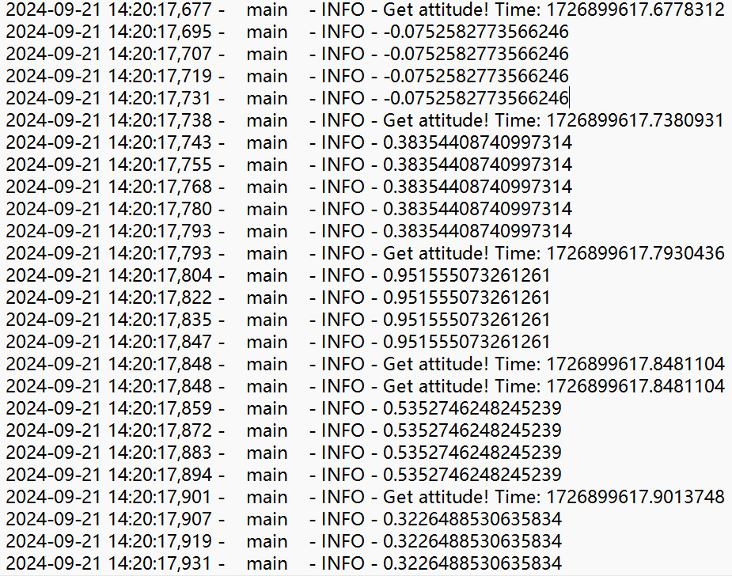

个人日志
20240625
ubuntu下安装/配置环境：https://fishros.org.cn/forum/topic/20/%E5%B0%8F%E9%B1%BC%E7%9A%84%E4%B8%80%E9%94%AE%E5%AE%89%E8%A3%85%E7%B3%BB%E5%88%97/12 小鱼一键安装。出现waiting for cache lock问题，参考 https://www.cnblogs.com/cqpanda/p/16247871.html 。
ubuntu安装annaconda：https://blog.csdn.net/m0_50117360/article/details/108403586 。
添加环境变量：https://blog.csdn.net/caomin1hao/article/details/78341568 。
创建环境时出现run conda init before conda activate linux，运行
source ~/.bashrc解决。conda添加清华源、conda-forge源。
创建环境时只用一个等号：
python=2.7。有时候运行不起来，加入
sudo命令即可python2打印字符串不加括号，python3需要加括号
20240626
学习DroneKit文档
~~Linux上运行Mission Planner，使用Mono运行exe文件。~~
MAVProxy也是地面站，具有仿真和可视化。可搭配Mission Planner，用MP连接MAVProxy提供的端口，用于图像化显示
ArduPilot官方安装教程；https://ardupilot.org/dev/docs/building-setup-linux.html#building-setup-linux ；另：https://blog.csdn.net/weixin_43234290/article/details/118389641 ；另：https://www.ncnynl.com/archives/202106/4257.html
linux添加环境变量？
export PATH=$PATH:$HOME/ardupilot/Tools/autotest export PATH=/usr/lib/ccache:$PATH
重新加载环境变量：
. ~/.profileArduPilot编译后没有sim_vehicle.py：在ardupilot/Tools/autotest/下
ArduPilot的SITL运行时，MAVProxy打开map和console失败。python的几个包没装好，需要删除重装（注意是pip3不是pip2）：https://blog.csdn.net/Dojinz/article/details/134872301
利用MP生成航点文件，导入SITL中，成功使模拟固定翼飞机起飞。
20240627
配置Markdown转pdf的css样式：https://blog.csdn.net/weixin_39278265/article/details/112552773
去掉Markdown转pdf的页眉页脚：https://blog.csdn.net/DwenKing/article/details/108101076#:~:text=%E6%89%93%E5%BC%80%20vscode%2C%E9%80%89%E6%8B%A9%20File%20-%3E%20Preferences%20-%3E%20Settings%20-%3E,Extensions%20-%3E%20Markdown-pdf%20configuration%20-%3EDisplay%20Header%20Footer%20%EF%BC%8C%E5%8F%96%E6%B6%88%E8%AF%A5%E9%80%89%E6%8B%A9%E6%A1%86%E5%89%8D%E7%9A%84%E5%AF%B9%E5%8B%BE%E5%8D%B3%E5%8F%AF%E3%80%82
MP生成的“起飞命令”航点文件中，多了一个“添加航点”的命令
查看解锁失败原因：MP中可以查看，解锁失败时会收到飞控发送的失败原因
ARMING_RUDDER参数为1，要求飞控有最低限度的PWM输入才能解锁，即必须接上接收机（可以尝试改RC_OPTIONS？置0忽略RC输入）
20240628
python全局变量无法在函数中直接调用，需在函数中声明其为
globalpython和sudo python是不一样的，可能版本不同，装的包也不同。
20240630
SITL设置飞行器初始位置：https://blog.csdn.net/qq_44070755/article/details/115578352
★一个较好的Ardupilot中文教程：https://flowus.cn/speedybee/share/de0dbc49-d414-4caf-9560-01f133f2d8ab
设置抛飞模式：https://flowus.cn/speedybee/share/dca13aa0-de00-4d89-be87-03d489820f7a 。抛飞貌似不能使飞行器解锁，只能使电机开始转动，并且貌似得在TAKEOFF模式下。
20240701
AUTO模式：油门大于0时开始执行任务：https://blog.csdn.net/u012814946/article/details/79671728 （Copter？）
AUTO的TAKEOFF指令也需要满足THR那几个参数才能进行，故可以使用MINACC控制抛飞
编写sh文件打开py文件，注意使用
chmod +x添加可执行权限。另，若遇sudo命令，使用echo yahboom | sudo -S python helloworld.py附带密码。rc.loacl未解决开机启动，使用crontab解决。
运行
crontab -l时显示no crontab for xxx：先运行crontab -e进行编辑即可。
20240703
试飞
20240704
部署yolov10
~~配置xlabel标注软件（注意新建环境）~~
git clone https://github.com/CVHub520/X-AnyLabeling cd X-AnyLabeling pip install -r requirements.txt pip install -r requirements-gpu.txt #可不运行 python anylabeling/app.py
json转txt文件。有bug，pandas模块有问题，通过 https://blog.csdn.net/weixin_56319483/article/details/136439310 解决。
训练时被killed，内存溢出？改小imgsz解决
20240705
★数据集处理网站：https://roboflow.com
★魔塔社区免费服务器：https://modelscope.cn/my/mynotebook/preset
google的colab免费服务器：https://colab.google/
20240706
ipynb文件中，代码为python语句，若代码前加
!则为终端中语句Why：yolov8s-obb.pt的训练出的模型，预测时自动画多边形框；yolov8s.pt训练出的仍然是正的方框
20240708
../xxx/xxx比~/xxx/xxx适用更广，python也能识别装yolov8直接运行
pip install ultralytics，运行yolo报错无dill模块，pip install装上即可OpenCV的
cv2.polylines()函数输入的numpy的array数组必须为整数，~~np.floor(a)对a向下取整~~。貌似还是不行，得利用np.int32()转32位整型。也就是说，一般的tensor和array类型可能不是int32。★且np.floor()并没有改变数字的类型，只是改变了值。参考：https://blog.csdn.net/qq_38343151/article/details/109313009 ，https://blog.csdn.net/q7w8e9r4/article/details/135332881确定preds转换的关键是
ops.non_max_suppression()yolo内部处理obb格式是xywhr格式，且r的范围是0~pi/2，故无法识别物体指向
20240709
虚拟机连笔记本摄像头：https://blog.csdn.net/baidu_26495369/article/details/120952192
在视频流中用yolo进行预测，并显示标注后的每一帧，一份可稍微参考的代码。
cv2读取文件时，注意文件后缀大小写，MP4和mp4不能混淆
20240710
python中
for i, obj in enumerate(cropped_objects, start=1)语句中，修改obj貌似不会对原列表中obj产生影响roboflow生成的类少了0这一类别，训练时发生
index 9 is out of bounds for dimension 1 with size 9错误，修改data.yaml即可：https://blog.csdn.net/qq_29320285/article/details/105886896
20240711
Linux下
screen命令在一个终端窗口运行多个shellsh脚本中使用
&连接两条命令可以同时执行，但可能会出现问题，例如sim_vehicle.py莫名其妙killedOpenCV中，
cap.grab()用于抓取下一帧，返回是否抓取成功的布尔值，不解码和返回图像。cap.retrieve()对帧进行解码，返回一个布尔值和解码后的帧。cap.read()综合了上述两个函数。空中转到AUTO模式自动跳过TAKEOFF命令
由其他模式回到AUTO模式时，从头执行任务
20240712
DroneKit内置
play_tone()函数，播放以b"..."传入的MML格式音符。源码是vehicle.message_factory.play_tone_encode(0, 0, b"...", b"...")，直接利用它第四个参数即可（因为第三个参数不超过30？字节，第四个实测不超过100字节）CUAV的GPS内置了蜂鸣器
SITL仿真出问题，飞机无法起飞
20240715
运行
Tools/environment_install/install-prereqs-ubuntu.sh -y时发生E: Could not get lock /var/lib/dpkg/lock-frontend. It is held by process 3559 (unattended-upgr)错误，使用sudo kill 3559即可。（但no such process，再运行时也未报错）SITL转发端口，在终端中运行
output add 192.168.14.82:14551，其中IP是地面站所在电脑的IP。地面站选择UDP连接即可。参考。★MP导出的航点文件删掉第一行的航点命令，不然SITL中无法起飞
conda删除环境：
conda remove -n xxxxx(名字) --all★V6X飞控的舵机必须用POWER1供电，不能用电调供电
20240716
yolo代码中，
for r in results的r含有多个目标
20240717
python中
for i in xxx循环，i从0开始python报错
ValueError: could not broadcast input array from shape (350,200,3) into shape (0,200,3)：数组格式不对应cv2.VideoWriter()最好输入原视频的帧率和大小
20240718
★
for r in results中，若有多个推理来源，results含有多个结果，r会循环；若推理单张图片，results只有一个（但检测出来的目标可能有多个），r就是results[0]。xxxtensor.size()返回张量形状，若想获得一维张量的长度（整型），可用xxxtensor.size(0)windows下git安装教程：https://blog.csdn.net/czjl6886/article/details/122129576 和 https://blog.csdn.net/weixin_48024605/article/details/136037857
20240719
AttributeError: module 'serial' has no attribute 'SerialException'，删掉serial装pyserial即可
20240720
python访问元组列表和访问元组可直接用下标
20240725
DroneKit播放音符出现
AttributeError: 'MAVLink' object has no attribute 'play_tune_encode'错误，解决：将SERIAL0_PROTOCOL设为2
20240725
使用H-RTK需将
GPS_TYPE设置为9，即DroneCan
20240728
“任何使用队列的时候，你都要确保在进程join之前，所有存放到队列中的项将会被其他进程、线程完全消费”，即终止子进程前清理queue中的内容。可通过while循环清理
~~cv2.destroyAllWindows()必须要在process.join()前调用~~ 不一定，主要还是因为上一条
20240729
第一次预测时的时长较长，例
results1 = model1(frame, conf = conf1)
20240731
克隆仓库需要使用生成的token，即“个人访问令牌”
拉取：更新云端的代码到本地。推送：同步本地代码至云端。
20240801
调用
condition.notify_all()出现阻塞或lock is not owned错误，原因未知★使用
Event对象用来在多进程中传递消息，更为方便
20240805
树莓派4B不能兼容miniconda3 4.10以上的版本：https://blog.csdn.net/weixin_43710676/article/details/129002349
import torch出现Illegal instruction错误，与CPU架构不匹配手动make安装pytorch：https://www.bilibili.com/read/cv17024476/
gnome设置开机自启动使用
gnome-terminal -- bash -c "sh /home/zrl/test.sh; exec bash"或gnome-terminal -x bash -c /home/me/autopy.sh。参考：https://blog.csdn.net/weixin_40497850/article/details/127383230 及 https://blog.csdn.net/mathlxj/article/details/106745367gnome-terminal用法：https://blog.csdn.net/zong596568821xp/article/details/78623130
serialx_baud含义：https://ardupilot.org/copter/docs/common-serial-options.html
20240807
很强的开源修复视频程序：https://github.com/anthwlock/untrunc
20240808
两个开源的yolov5-obb项目：https://github.com/hukaixuan19970627/yolov5_obb 和 https://github.com/CVHub520/yolov5_obb
OpenCV运动模糊可模拟运动镜头拍的画面，见motion_blur.py
Windows上加快打开摄像头：https://blog.csdn.net/llvtingting/article/details/115873680
20240826
Multiprocessing中的Value和Array不支持迭代，不能放在循环中
不是所有的代码都必须放在
if __name__ == '__main__':块中。这个条件语句通常用于在 Windows 操作系统上启动子进程，因为在这种操作系统上，子进程会导入主模块，导致递归导入问题。在Windows下vehicle无法传入另一个进程，但在Linux下可以，不过是静态的
20240917
dronekit-python源码中，属性的更新是通过监听器来实现的，监听器会一直监听来自飞控的特定信息（MAVLINK中的message）
分析源码可知
ATTITUDE和GLOBAL_POSITION_INT这两个MAVLINK消息是用来更新attitude和global_relative_frame的，且自带时间戳通过DroneKit提供的
on_message()函数可以在接收到某消息时进行特定的操作，例如解析该消息的内容，获得该消息的时间戳
20240918
飞控通过MAVLINK发送ATTITUDE消息的频率不等，一般为50Hz、100Hz或200Hz
发送频率越高，数据传输的带宽需求也越大，可能会对其他MAVLINK消息的传输产生影响
此外，MAVLINK通道是有可能堵塞的，例如之前的代码，在一个没有延时的循环中一直发送MAVLINK消息
GPS的更新频率较慢，一般1~10Hz（或更高）
飞控一般会通过其他数据例如姿态角、速度等对位置信息进行预测
飞控中
SR0_EXTRA1等参数控制飞控发送ATTITUDE等消息的频率，但费尽办法无法修改通过
MAV_CMD_SET_MESSAGE_INTERVAL命令可以设置飞控发送某消息的时间间隔
20240921
从图片可以看出，姿态信息更新频率上不去，主要还是飞控发送消息的频率被限制了，每次get之间都有60ms左右间隔

通过摄像头拍画面上打印的时间，可以记录下两次打印时间戳的间隔，约等于摄像头延迟+屏幕显示延迟